CMSC424: Query Processing — Join Size Estimation and Optimization Algorithms
Instructor: Amol Deshpande
1. Introduction
The previous set of notes covered how to estimate the sizes of single-relation selections using statistics: distinct value counts, most common values, and histograms. We now complete the cost estimation picture by addressing join size estimation — how many tuples does a join produce? — and then turn to the third and final piece of query optimization: the search algorithms that actually find a good plan without enumerating all possible plans.
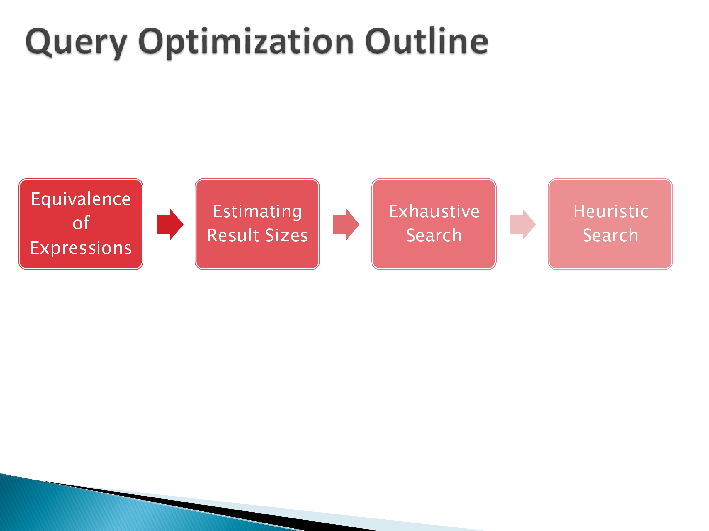
2. Estimating Join Result Sizes
For a join \(R \bowtie_A S\) on attribute \(A\), we need to estimate the number of output tuples. The key insight is to think about a single tuple of \(R\) and ask: how many tuples in \(S\) does it match on average? The total result size is then \(n_R \times \text{(average matches per R tuple)}\).
2.1 Case 1: A is a Primary Key for S
If \(A\) is a primary key for \(S\), then by definition no two tuples in \(S\) share the same \(A\) value. Therefore, any given tuple in \(R\) with value \(A = v\) has at most one matching tuple in \(S\). Assuming referential integrity (no dangling foreign key references), there is exactly one match for every R tuple that has a corresponding value in S. The result size is:
\[|R \bowtie_A S| \approx n_R\]
Example: \(V(B, R) = 100\), \(n_R = 1000\); \(B\) is primary key for \(S\), \(n_S = 500\). Each of the 1000 R tuples finds at most one match in S. Result size = 1000.
2.2 Case 2: A is a Primary Key for R (Symmetric)
By symmetry: if \(A\) is a primary key for \(R\), then each \(S\) tuple matches at most one \(R\) tuple, and the result size is at most \(n_S\).
2.3 Case 3: A is Not a Key for Either Relation
This is the general case. Under the uniformity assumption: if \(V(A, S) = d\) distinct values of \(A\) appear in \(S\) and there are \(n_S\) total tuples, then on average each distinct value of \(A\) appears \(n_S / V(A, S)\) times in \(S\). A given R tuple with value \(A = v\) can therefore expect \(n_S / V(A, S)\) matches in S. Multiplying across all R tuples:
\[|R \bowtie_A S| \approx n_R \times \frac{n_S}{V(A, S)}\]
By symmetry, an equally valid estimate is \(n_R \times n_S / V(A, R)\). In practice, the standard formula takes the maximum of the two distinct-value counts in the denominator — this is conservative (tends to underestimate rather than overestimate, which is generally safer for optimization):
\[|R \bowtie_A S| \approx \frac{n_R \times n_S}{\max(V(A, R),\; V(A, S))}\]
Example (worked on the whiteboard): \(n_R = 1000\), \(V(B, R) = 100\), \(n_S = 500\), \(V(B, S) = 250\).
- Each R tuple has \(A = v\) for some \(v\). In \(S\), value \(v\) appears on average \(500 / 250 = 2\) times.
- Total result size: \(1000 \times 2 = 2000\).
Using the formula directly: \(1000 \times 500 / \max(100, 250) = 500000 / 250 = 2000\). ✓
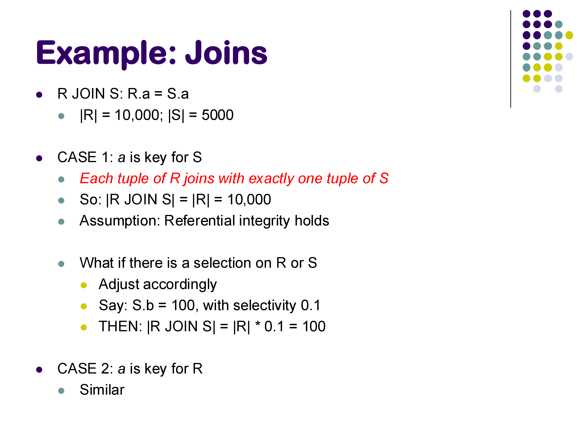
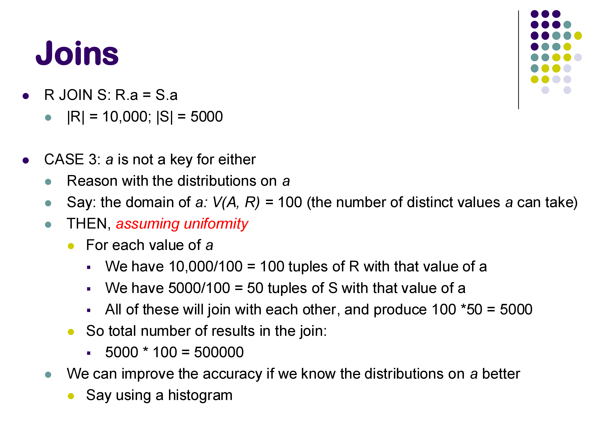
2.4 When Neither Relation Has a Key: Multiplicative Blowup
The formula \(n_R \times n_S / \max(V(A,R), V(A,S))\) can yield a result that is larger than either input. This happens when \(A\) is frequent in both relations.
Example: \(n_R = 10000\), \(n_S = 5000\), \(V(A, R) = V(A, S) = 100\). Estimate: \(10000 \times 5000 / 100 = 500000\).
Starting from 15,000 total input tuples, we estimate 500,000 output tuples — a 33× expansion. This is because each of the 100 distinct values of \(A\) appears on average 100 times in R and 50 times in S, so each value contributes \(100 \times 50 = 5000\) join tuples, and across 100 values we get 500,000 total.
Such joins are not common in well-designed databases (they usually indicate a missing primary key constraint or an unusual many-to-many relationship), but they do occur. The optimizer must be aware that join results can be far larger than inputs — this affects the ordering of joins in a multi-way join.
2.5 Incorporating Selections
If there is a selection predicate on one of the join inputs — say, a condition on \(S\) with selectivity \(f\) (fraction of S tuples satisfying the condition) — the adjusted estimate simply multiplies:
\[|(\sigma_\theta(S)) \bowtie R| \approx f \times |S \bowtie R|\]
This assumes the selection predicate is independent of the join attribute, which is not always true but is the standard assumption. In practice, correlation between attributes (e.g., dept_name and salary in an employee table) can cause this estimate to be off significantly, but handling arbitrary correlations requires multi-dimensional statistics that are expensive to maintain.
3. The Full Optimization Pipeline
With selectivity estimation and join size estimation both in hand, the optimizer can estimate the cost of any plan tree bottom-up: start with the base relation sizes, propagate sizes through each operator using the formulas above, and use the operator cost formulas from earlier notes (hash join = O(\(b_R + b_S\)), sort-merge join = O(\(b_R + b_S\)), etc.) to compute total cost.
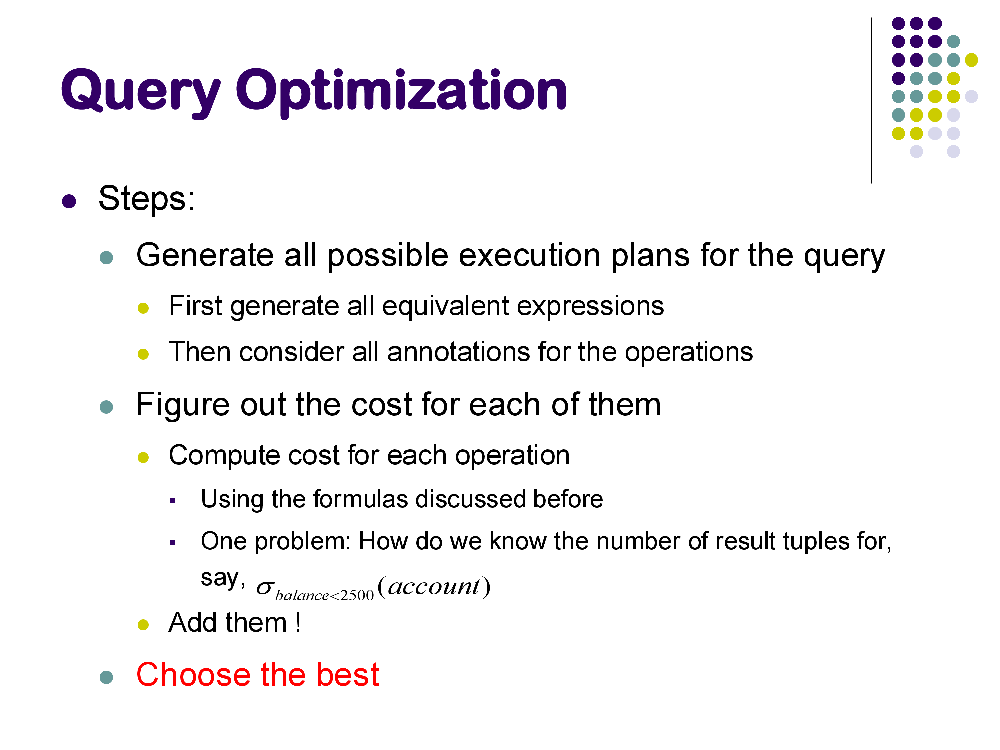
The three main steps of query optimization are: 1. Generate equivalent expressions — using equivalence rules (covered in the previous notes) 2. Estimate cost for each plan — using statistics and the formulas above 3. Choose the best plan — using an efficient search algorithm
The challenge is that generating all equivalent expressions is infeasible for non-trivial queries. Steps 1 and 3 must be done together, with cost estimation used to prune the search. We now discuss the search algorithms.
4. The Search Problem
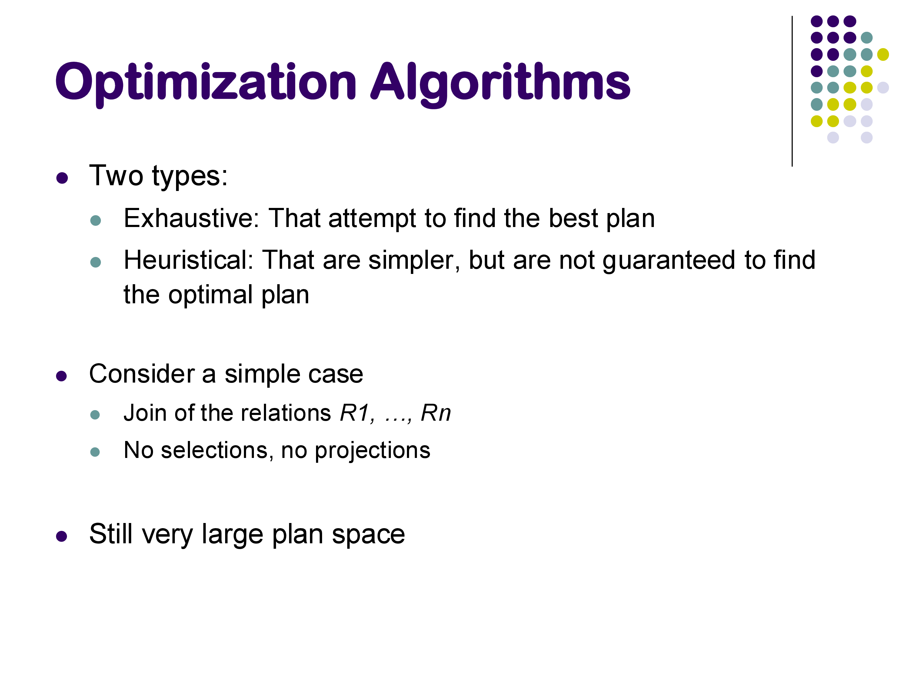
For a query joining \(n\) relations, the number of distinct join orderings (ignoring operator choice) is at least \(n!\). For \(n = 7\) that is 5,040; for \(n = 10\) it exceeds 3.6 million. And this counts only join orderings — for each ordering, we also choose between hash join, sort-merge join, and nested loops join, and decide whether to apply selections before or after each join.
The total plan space is enormous. Early databases simply did not have a proper optimizer and used hand-coded heuristics. MongoDB and Apache Spark both operated without a full cost-based optimizer for the first 8–10 years of their existence. Oracle famously used heuristics-only optimization from its founding in the mid-1980s until it switched to a proper cost-based optimizer in the late 1990s.
Today, all mature relational databases use a combination of heuristic pruning and cost-based dynamic programming.
5. Heuristic Optimization
The simplest approach: apply a fixed set of rewrite rules as mandatory transformations, without considering cost. Common heuristics:
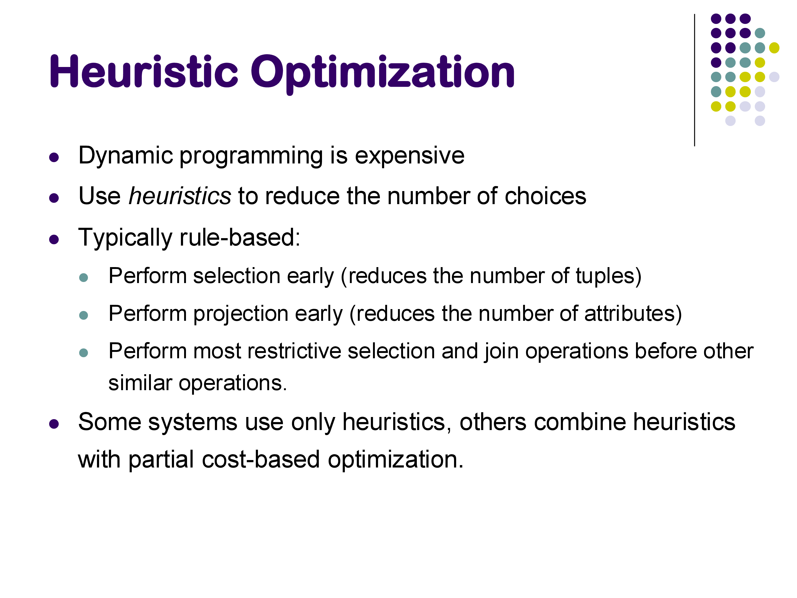
Apply selections as early as possible. Push selection predicates as far down the plan tree as allowed by the equivalence rules. This reduces the number of tuples processed by all operators above the selection, and is almost always beneficial.
Apply projections as early as possible. Drop attributes not needed by later operators. This reduces tuple width and thus the amount of data processed.
Do the most restrictive operation first. Among a sequence of joins, estimate which join produces the fewest output tuples and do it first. The intuition: if one join eliminates most rows early, subsequent joins operate on much smaller inputs.
These rules do not guarantee an optimal plan. The selection-first rule, as discussed in the previous notes, can actually hurt performance when the best plan involves an index nested loops join on the unfiltered relation. The “most restrictive first” rule for joins turns out to be a poor heuristic in many cases — it ignores the cost of producing the intermediate result.
Despite their limitations, heuristics remain valuable for large \(n\) where cost-based search becomes expensive, and most production optimizers apply some heuristic pruning before running the cost-based search.
6. Cost-Based Search: Dynamic Programming
The standard algorithm for cost-based join ordering is dynamic programming, first published by Selinger et al. at IBM in 1979 in the context of System R — one of the most influential papers in database systems history. It remains the foundation of most production optimizers today.
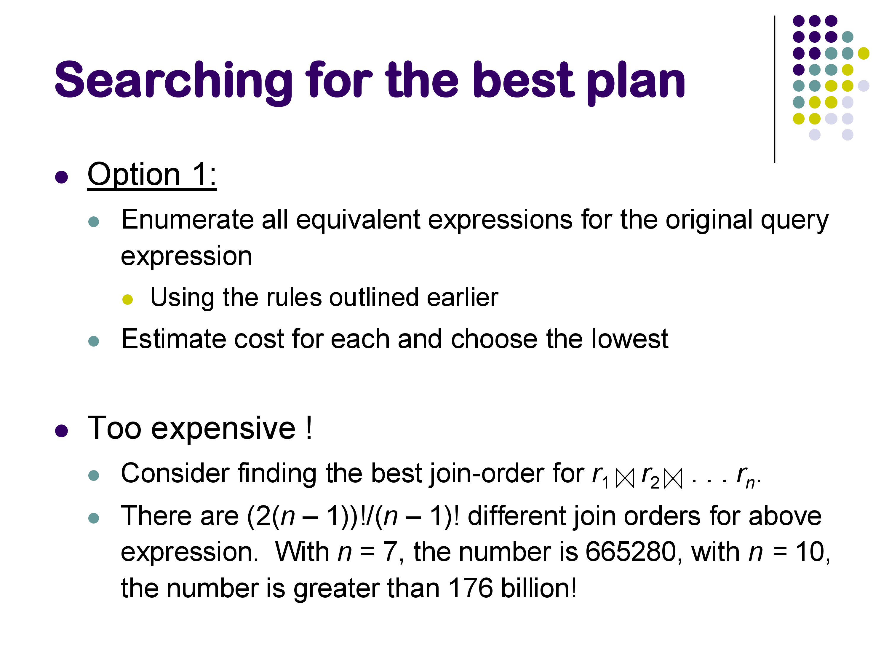
6.1 The Key Insight: Optimal Substructure
The reason dynamic programming works here is that the join cost function has optimal substructure: the best plan for joining \(\{R_1, R_2, R_3, R_4, R_5\}\) can be built from the best plan for joining some subset \(\{R_1, R_2, R_3, R_4\}\) combined with \(R_5\). We do not need to reconsider the internal structure of the sub-plan for \(\{R_1, R_2, R_3, R_4\}\) — we just use its precomputed cost and estimated output size.
This is the same principle behind classical DP algorithms for problems like shortest paths or optimal binary search trees.
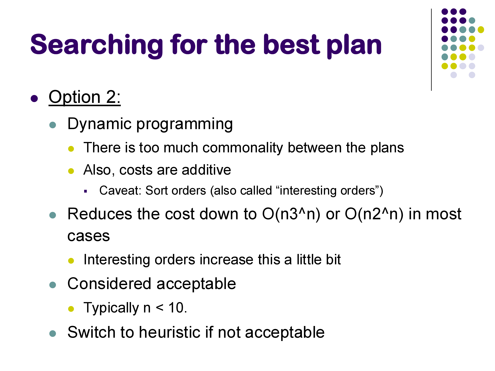
6.2 The Algorithm
Build up the optimal plan bottom-up, one join at a time:
Level 1 — Single relations: the “best plan” for each base relation \(R_i\) is trivially a scan (sequential or index). Record the estimated output size of each.
Level 2 — Pairwise joins: for every pair \((R_i, R_j)\), compute the best way to join them: consider hash join, sort-merge join, and nested loops join; pick the cheapest. Record the cost and estimated output size of \(R_i \bowtie R_j\).
Level 3 — Three-way joins: for every subset \(\{R_i, R_j, R_k\}\) of size 3, consider all ways to split it into a two-way subproblem plus one more relation: - \((R_i \bowtie R_j) \bowtie R_k\): use the precomputed cost of \(R_i \bowtie R_j\) plus the cost of joining its output with \(R_k\) - \((R_i \bowtie R_k) \bowtie R_j\): similarly - \((R_j \bowtie R_k) \bowtie R_i\): similarly
For each grouping, consider all join algorithms. Keep only the cheapest. The precomputed costs and sizes from Level 2 are reused directly.
Level \(k\): continue until reaching Level \(n\) — the full \(n\)-way join.
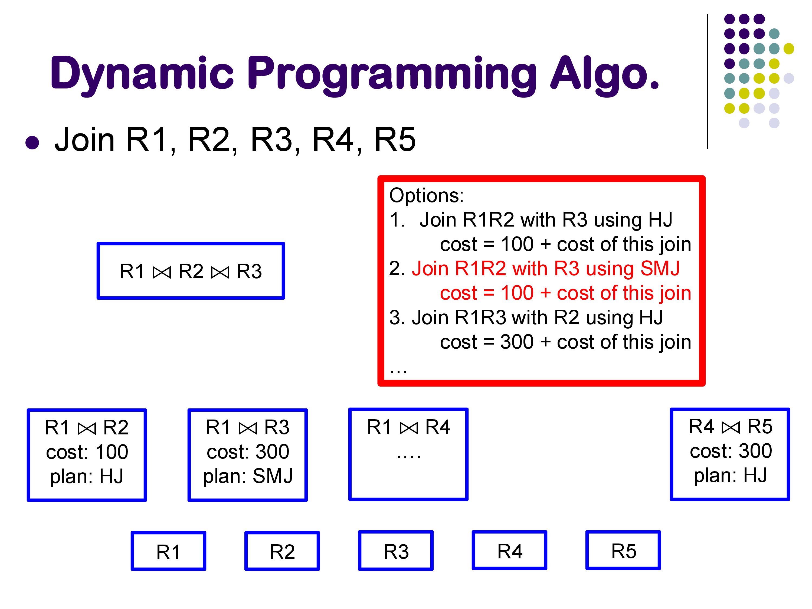
Worked example (5 relations, from the lecture): At Level 2, the optimizer finds: - Best way to join \(R_1, R_2\): hash join, cost 100 - Best way to join \(R_1, R_3\): sort-merge join, cost 300 - Best way to join \(R_4, R_5\): hash join, cost 300 - … (all \(\binom{5}{2} = 10\) pairs)
At Level 3, to find the best plan for \(\{R_1, R_2, R_3\}\): - Option A: \((R_1 \bowtie R_2) \bowtie R_3\) = 100 (R1,R2 cost) + cost of joining their output with R3 - Option B: \((R_1 \bowtie R_3) \bowtie R_2\) = 300 + cost of joining output with R2 - Option C: \((R_2 \bowtie R_3) \bowtie R_1\) = precomputed cost of R2,R3 + cost with R1
The DP does not reopen the question of how to join \(R_1\) and \(R_2\) internally; it trusts the Level 2 answer.
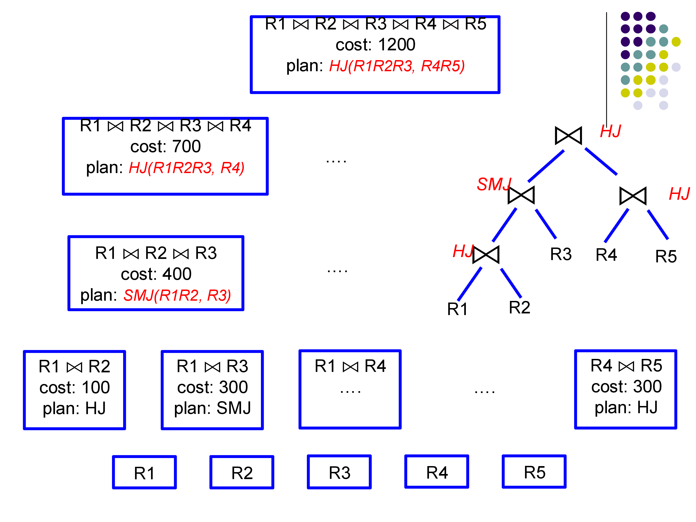
6.3 Complexity
The number of subsets of \(n\) relations is \(2^n\). For each subset of size \(k\), we consider \(k\) ways to add the last relation, and for each we try a constant number of join algorithms. Total work: \(O(n^2 \cdot 2^n)\). This is still exponential, but exponential in \(n\) rather than the super-exponential \(n!\) of exhaustive enumeration.
For \(n \leq 10\), this is fast in practice. For \(n > 10\), most optimizers fall back to heuristics or restrict the plan space.
6.4 Left-Deep vs Bushy Plans
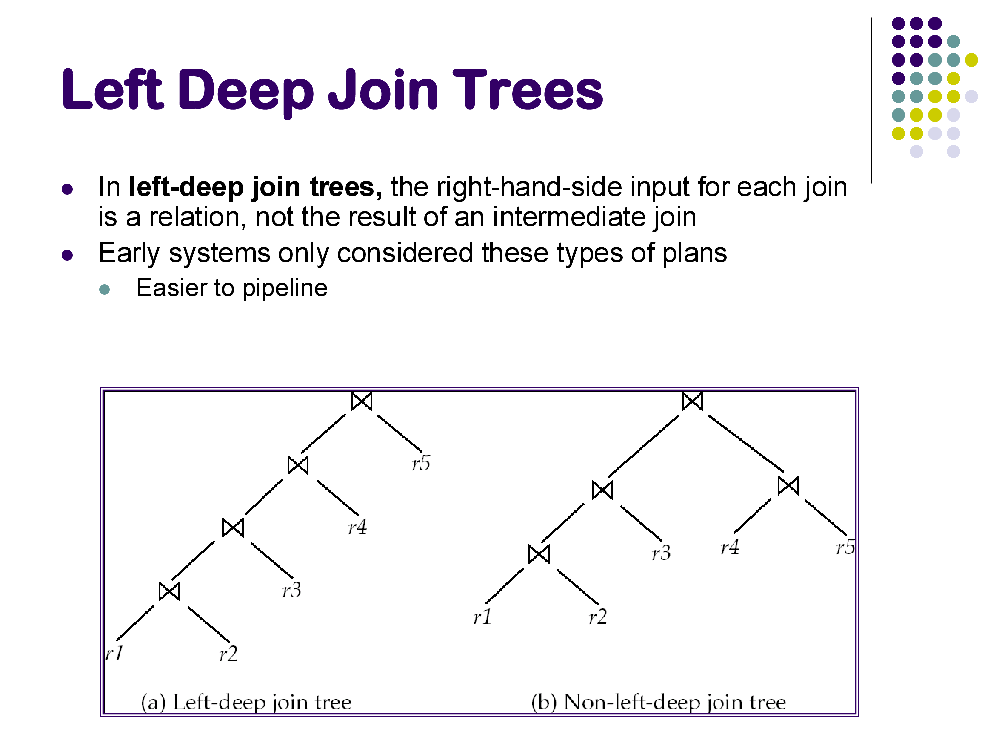
In a left-deep join tree, every join has a base relation as its right input — intermediate results only appear on the left. In a bushy plan, intermediate results can appear on both sides of a join.
Left-deep plans are simpler and dominate in practice for two reasons: 1. They are easier to pipeline: the right (probe) input to each join is a base relation that can be scanned from disk, while the left (build) input flows directly from the previous join operator. 2. Early systems only considered left-deep plans to keep the optimizer tractable.
Many modern optimizers still restrict their search to left-deep plans, especially for large \(n\). The number of left-deep orderings is \(n!\) — still large, but the DP algorithm restricts this further by only considering orderings consistent with the join graph (relations that share no join condition need not be joined first).
7. Practical Considerations
Combining DP with heuristics. Most production optimizers apply heuristics first — push down selections, eliminate cross products by respecting the join graph, drop obviously dominated plans — and then run DP on the reduced plan space. This makes optimization tractable for queries with 20+ joins.
Interesting orders. A plan whose output is sorted on a useful attribute (e.g., the join attribute used by the next join, or an ORDER BY attribute) may be worth keeping even if it is slightly more expensive, because it can eliminate a sort operator later. This complicates the DP slightly but the principle is the same.
The limits of statistics. All of the cost estimates depend on the accuracy of the underlying statistics. As we saw in the previous notes, unusual predicates can produce estimates off by an order of magnitude. When that happens, even a perfect search algorithm chooses a bad plan. This is why statistics maintenance (timely VACUUM ANALYZE in PostgreSQL, or its equivalent) is as important as the optimizer algorithm itself.
8. Summary
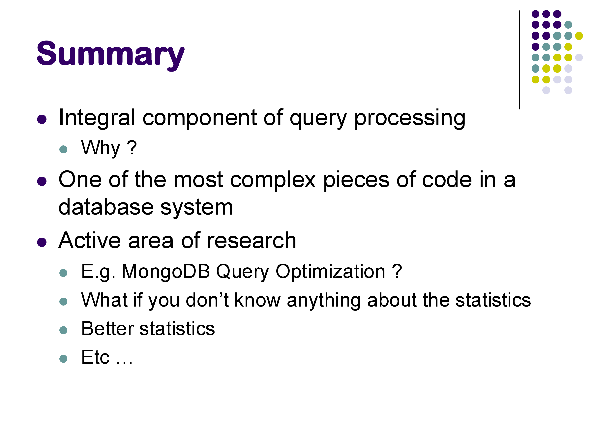
Query optimization brings together three components:
- Equivalence rules (previous notes): determine which plan transformations are valid
- Cost and size estimation (this and previous notes): estimate how expensive each plan will be
- Single-table selectivity: V(A,r) for equality, MAX/MIN for ranges, MCVs for skew, histograms for range refinement
- Join sizes: \(n_R \times n_S / \max(V(A,R), V(A,S))\), with special cases for primary key joins
- Search algorithms (this section): find a good plan efficiently
- Heuristics: selection/projection pushdown, restrictive-first ordering — simple, fast, not optimal
- Dynamic programming (Selinger et al. 1979): bottom-up, \(O(n^2 \cdot 2^n)\), optimal within the plan space considered
Query optimization is one of the most complex components in a database system and remains an active research area. Systems like MongoDB and early Apache Spark shipped without full cost-based optimizers for years; both eventually added them. The largest vendors (Oracle, IBM DB2, SQL Server, PostgreSQL) continue to invest heavily in improving their optimizers, particularly in statistics estimation and handling of complex SQL features.
The next module covers parallel and distributed query processing — how these same operations are executed across multiple machines in systems like Apache Spark and Amazon Redshift.